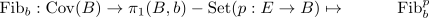

path connected fundamental theorem of covering theory by G-Sets as essentially surjective functor
Proposition
Let $B$ be a locally and globally pathconnected topological space
TFAE:
- the functor

- there exists a simply connected covering $p: E \rightarrow B$
Proof
1) $\implies$ 2)
Suppose $\mathrm{Fib}_b$ is essentially surjective, then there exists a connected covering $p: E \rightarrow B$ with
\begin{align*}
\mathrm{Fib}_b^p \cong \pi_1(B,b)
\end{align*}
and hence $\pi_1(E,e) = 1$
2) $\implies$ 1)
Suppose $\pi: \tilde{B} \rightarrow B$ is simply connected, then $\pi$ is a galois covering (cf. simply connceted covering as galois covering). Hence